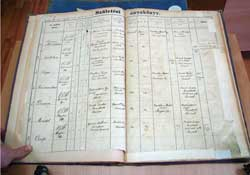
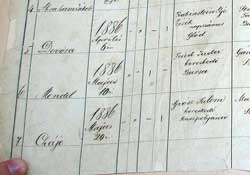
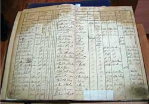
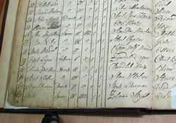
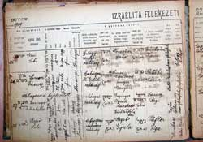
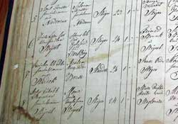
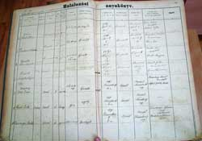
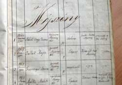

|
• Background • Project Statistics and Updates • Information in the Original Data • Contents of the Database • What do the records look like? • Acknowledgements • Searching the Database |
The Máramaros County Jewish Records Indexing Project is a volunteer-run genealogy and history project, working to create a free searchable online database of all known surviving Jewish vital records — birth, marriage and death records of the late 18th thru early 20th centuries — from the former Hungarian county (megye) of Máramaros.
Beginning in 1851, the government of the Kingdom of Hungary required each religious community to record vital records (i.e.: births, marriages, and deaths). Thus most of the towns in Máramaros County recorded Jewish vital records begininng in the 1850s. Civil Registration — meaning that everyone in a given town was registered in the same book, regardless of their religion — began in 1895.
This project initially focused only on the Jewish community vital records, which were officially recorded from 1851 to 1895. These records have now been fully transcribed in this database. In 2014, we began extracting Jewish records from the Civil Registers, which begin in October 1895.
The 113 surviving birth, marriage, and death register books for the Jewish communities of Máramaros County are currently stored at a regional branch of the Romanian National Archives (Arhivele Naţionale ale României), located in the city of Baia Mare, Romania.
With the help of a photographer in Romania, who traveled to the Baia Mare regional archives for us, we obtained digital photographs of every one of the 113 surviving Jewish community record books. (Originally we believed that there were 115 books, but it turned out that one book was mislabeled, and one birth records book unfortunately appears to have gone missing from the archives sometime between 1972 and 2009). These register books have not been microfilmed by the Mormons (LDS Church) yet, nor by the Romanian government. Other than actually traveling to the archives in Baia Mare, or hiring a researcher to go there, the only way for genealogists and historians to research these records is through this project. We have also obtained digital copies of 258 of the 487 Civil Register books (post 1895), and have begun transcribing these. The transcriptions of first dozen of these books were added to this database in the most recent update (October 2014).
This project has been funded through generous donations from genealogists around the world, and is managed through the JewishGen Hungarian Special Interest Group (H-SIG).
A total of 113 vital record books from the Jewish community (pre-1896), and 487 Civil Registers (post-1895) are known to exist in the Baia Mare archives. As of 2014, all of the 113 Jewish community books, and 258 of the 487 Civil Register books have been digitally photographed and acquired by the project.
As of October 2014:
Release history:
Generally speaking, early records in this data set — that is, records from the 1850s-1860s — have only bare minimum information available, whereas the later records from the very end of the 19th century have far more information available. For example, a typical birth records set from the 1880s or 1890s would usually have all of these types of information available, and perhaps more:
Important note: In the death records for this database, married women who died were sometimes recorded with their married surname, and sometimes with their maiden surname. Not every record makes clear whether they are listing her maiden name or married name.
| Register Book | Record Type(s) | Record Years | # of Records | Date Added to JewishGen |
|---|---|---|---|---|
| Register Book #39 | births | 1886-1915; missing some records in 1889 for Baia Mare, Romania |
549 | July 2012 |
| Register Book #270 | births, marriages, and deaths | 1851-1853 for Berbeşti, Romania 1851-1853 for Bilovartsi, Ukraine 1851-1853 for Bocicoiu Mare, Romania 1851-1853 for Borşa, Romania 1851-1853 for Bréb, Romania 1851-1853 for Budeşti, Romania 1851-1853 for Crăciuneşti, Romania 1851-1853 for Dibrova, Ukraine 1851-1853 for Dobrians'ke, Ukraine 1851-1853 for Dubove, Ukraine 1851-1853 for Giuleşti, Romania 1851-1853 for Glód, Romania 1851-1853 for Hanychi, Ukraine 1851-1853 for Hărniceşti, Romania 1851-1853 for Iapa, Romania 1851-1853 for Ieud, Romania 1851-1853 for Leordina, Romania 1851-1853 for Mara, Romania 1851-1853 for Moisei, Romania 1851-1853 for Neresnytsia, Ukraine 1851-1853 for Onceşti, Romania 1851-1853 for Petrova, Romania 1851-1853 for Pidplesha, Ukraine 1851-1853 for Poienile de sub Munte, Romania 1851-1853 for Poienile Izei, Romania 1851-1853 for Remeţi, Romania 1851-1853 for Rona de Sus, Romania 1851-1853 for Ruscova, Romania 1851-1853 for Săcel, Romania 1851-1853 for Săliştea de Sus, Romania 1851-1853 for Săpânţa, Romania 1851-1853 for Sârbi, Romania 1851-1853 for Sat-Şugatag, Romania 1851-1853 for Serednie Vodiane, Ukraine 1851-1853 for Shyrokyi Luh, Ukraine 1851-1853 for Solotvyno, Ukraine 1851-1853 for Teresva, Ukraine 1851-1853 for Ternovo, Ukraine 1851-1853 for Tiachiv, Ukraine 1851-1853 for Verkhnie Vodiane, Ukraine 1851-1853 for Vil'khivtsi, Ukraine 1851-1853 for Yasinya, Ukraine |
473 | July 2012 |
| Register Book #271 | births | 1861-1867 for Sighetu Marmaţiei, Romania | 437 | October 2014 |
| deaths | 1861-1867 for Bedevlia, Ukraine 1861-1867 for Bilovartsi, Ukraine 1861-1867 for Călineşti, Romania 1861-1867 for Chumal'ovo, Ukraine 1861-1867 for Dobrians'ke, Ukraine 1861-1867 for Drahovo, Ukraine 1861-1867 for Dubove, Ukraine 1861-1867 for Hanychi, Ukraine 1861-1867 for Kolodne, Ukraine 1861-1867 for Lopukhiv, Ukraine 1861-1867 for Lunca la Tisa, Romania 1861-1867 for Mara, Romania 1861-1867 for Neresnytsia, Ukraine 1861-1867 for Novobarovo, Ukraine 1861-1867 for Pidplesha, Ukraine 1861-1867 for Remeţi, Romania 1861-1867 for Rus'ke Pole, Ukraine 1862-1867 for Sighetu Marmaţiei, Romania 1861-1867 for Tereblia, Ukraine 1861-1867 for Teresva, Ukraine 1861-1867 for Ternovo, Ukraine 1861-1867 for Tiachiv, Ukraine 1861-1867 for Uhlia, Ukraine 1861-1867 for Vil'khivtsi, Ukraine 1861-1867 for Vonihove, Ukraine |
222 | July 2012 | |
| Register Book #272 | births | 1854 for Bârsana, Romania 1856-1858 for Berbeşti, Romania 1854-1866 for Bila Tserkva, Ukraine 1857 for Bilovartsi, Ukraine 1854-1857 for Bistra, Romania 1854 for Bocicoel, Romania 1853-1866 for Bocicoiu Mare, Romania 1855 for Bogdan Vodă, Romania 1854 for Borşa, Romania 1856-1857 for Botiza, Romania 1853; 1855; 1857 for Bréb, Romania 1854 for Budeşti, Romania 1860; 1863-1866 for Câmpulung la Tisa, Romania 1854-1860 for Crăciuneşti, Romania 1854; 1857 for Deseşti, Romania 1854-1860; 1862-1866 for Dibrova, Ukraine 1854 for Dragomireşti, Romania 1853-1854; 1856 for Dubove, Ukraine 1854; 1856-1857 for Giuleşti, Romania 1856-1857 for Glód, Romania 1853-1854; 1856-1857 for Hanychi, Ukraine 1854-1855 for Hărniceşti, Romania 1853-1866 for Hrushovo, Ukraine 1853; 1865 for Iapa, Romania 1854-1855 for Ieud, Romania 1854-1866 for Kabalacsarda, Romania 1854 for Kalyny, Ukraine 1854 for Leordina, Romania 1854 for Moisei, Romania 1854 for Năneşti, Romania 1857 for Neresnytsia, Ukraine 1857-1860; 1862-1866 for Nyzhnje Selyshche, Ukraine 1866 for Ocna Şugatag, Romania 1854-1855; 1857-1858 for Onceşti, Romania 1854 for Petrova, Romania 1854 for Poienile de sub Munte, Romania 1855-1866 for Rona de Jos, Romania 1854 for Rona de Sus, Romania 1854-1855 for Rozavlea, Romania 1854 for Ruscova, Romania 1854 for Săcel, Romania 1854 for Săliştea de Sus, Romania 1855-1859; 1862-1866 for Săpânţa, Romania 1855-1859; 1862-1863; 1865-1866 for Sărăsău, Romania 1854 for Sârbi, Romania 1866 for Sat-Şugatag, Romania 1855-1860; 1862-1863; 1865-1866 for Serednie Vodiane, Ukraine 1857 for Şieu, Romania 1853-1861 for Sighetu Marmaţiei, Romania 1856-1866 for Solotvyno, Ukraine 1856-1857 for Strâmtura, Romania 1853-1866 for Velykyi Bychkiv, Ukraine 1857; 1862-1866 for Verkhnie Vodiane, Ukraine 1854 for Vişeu de Jos, Romania 1854 for Vişeu de Mijloc, Romania 1854 for Vişeu de Sus, Romania 1854-1857 for Yasinya, Ukraine |
2,015 | July 2012 |
| Register Book #273 | births | 1862-1867 for Bedevlia, Ukraine 1862-1867 for Bilovartsi, Ukraine 1862-1867 for Bushtyno, Ukraine 1862-1867 for Dobrians'ke, Ukraine 1862-1867 for Drahovo, Ukraine 1862-1867 for Dubove, Ukraine 1862-1867 for Hanychi, Ukraine 1862-1867 for Kalyny, Ukraine 1862-1867 for Kolodne, Ukraine 1862-1867 for Krasna, Ukraine 1862-1867 for Kryva, Ukraine 1862-1867 for Lopukhiv, Ukraine 1862-1867 for Mara, Romania 1862-1867 for Neresnytsia, Ukraine 1862-1867 for Novobarovo, Ukraine 1862-1867 for Okruhla, Ukraine 1862-1867 for Pidplesha, Ukraine 1862-1867 for Remeţi, Romania 1862-1867 for Rus'ka Mokra, Ukraine 1862-1867 for Rus'ke Pole, Ukraine 1862-1867 for Shyrokyi Luh, Ukraine 1862-1867 for Sighetu Marmaţiei, Romania 1862-1867 for Tereblia, Ukraine 1862-1867 for Teresva, Ukraine 1862-1867 for Ternovo, Ukraine 1862-1867 for Tiachiv, Ukraine 1862-1867 for Uhlia, Ukraine 1862-1867 for Ust'-Chorna, Ukraine 1862-1867 for Vil'khivtsi, Ukraine 1862-1867 for Vonihove, Ukraine 1862-1867 for Vynohradiv, Ukraine |
722 | July 2012 |
| Register Book #274 | births | 1866-1872 for Bila Tserkva, Ukraine 1866-1872 for Câmpulung la Tisa, Romania 1866-1872 for Dibrova, Ukraine 1866-1872 for Hrushovo, Ukraine 1866-1872 for Iapa, Romania 1866-1872 for Kabalacsarda, Romania 1866-1872 for Rona de Jos, Romania 1866-1872 for Rona de Sus, Romania 1866-1872 for Săpânţa,, Romania 1866-1872 for Sărăsău, Romania 1866-1872 for Serednie Vodiane, Ukraine 1866-1872 for Sighetu Marmaţiei, Romania 1866-1872 for Solotvyno, Ukraine 1866-1872 for Verkhnie Vodiane, Ukraine 1866-1872 for Vodytsia, Ukraine |
736 | July 2012 |
| Register Book #275 | births, marriages, and deaths | 1866-1872; 1868-1871; 1868-1872 for Bedevlia, Ukraine 1868-1872 for Bilovartsi, Ukraine 1868-1872 for Bushtyno, Ukraine 1868-1872 for Dobrians'ke, Ukraine 1868-1872 for Drahovo, Ukraine 1868-1872 for Dubove, Ukraine 1868-1872 for Dulovo, Ukraine 1868-1872 for Hanychi, Ukraine 1868-1872 for Kalyny, Ukraine 1868-1872 for Kolodne, Ukraine 1868-1872 for Krasna, Ukraine 1868-1872 for Kryva, Ukraine 1868-1872 for Lopukhiv, Ukraine 1868-1872 for Mara, Romania 1868-1872 for Neresnytsia, Ukraine 1868-1872 for Novobarovo, Ukraine 1868-1872 for Novoselytsia, Ukraine 1868-1872 for Okruhla, Ukraine 1868-1872 for Pidplesha, Ukraine 1868-1872 for Remeţi, Romania 1868-1872 for Rus'ka Mokra, Ukraine 1868-1872 for Rus'ke Pole, Ukraine 1868-1872 for Shyrokyi Luh, Ukraine 1868-1872 for Sighetu Marmaţiei, Romania 1868-1872 for Tereblia, Ukraine 1868-1872 for Teresva, Ukraine 1868-1872 for Ternovo, Ukraine 1868-1872 for Tiachiv, Ukraine 1868-1872 for Uhlia, Ukraine 1868-1872 for Ust'-Chorna, Ukraine 1868-1872 for Vil'khivtsi, Ukraine 1868-1872 for Vonihove, Ukraine 1868-1872 for Vynohradiv, Ukraine |
672 | July 2012 |
| Register Book #276 | births | 1868-1878 for Bedevlia, Ukraine 1868-1878 for Bilovartsi, Ukraine 1868-1878 for Chumal'ovo, Ukraine 1868-1878 for Dobrians'ke, Ukraine 1868-1878 for Drahovo, Ukraine 1868-1878 for Dubove, Ukraine 1868-1878 for Hanychi, Ukraine 1868-1878 for Kalyny, Ukraine 1868-1878 for Kolodne, Ukraine 1868-1878 for Krasna, Ukraine 1868-1878 for Kryva, Ukraine 1868-1878 for Lopukhiv, Ukraine 1868-1878 for Mara, Romania 1868-1878 for Neresnytsia, Ukraine 1868-1878 for Novobarovo, Ukraine 1868-1878 for Novoselytsia, Ukraine 1868-1878 for Pidplesha, Ukraine 1868-1878 for Remeţi, Romania 1868-1878 for Rus'ka Mokra, Ukraine 1868-1878 for Rus'ke Pole, Ukraine 1868-1878 for Shyrokyi Luh, Ukraine 1868-1878 for Tereblia, Ukraine 1868-1878 for Teresva, Ukraine 1868-1878 for Ternovo, Ukraine 1868-1878 for Tiachiv, Ukraine 1868-1878 for Uhlia, Ukraine 1868-1878 for Ust'-Chorna, Ukraine 1868-1878 for Vil'khivtsi, Ukraine 1868-1878 for Vonihove, Ukraine |
2,104 | July 2012 |
| Register Book #277 | births | 1872-1885 for Sighetu Marmaţiei, Romania | 2,227 | October 2014 |
| Register Book #278 | births | 1872-1886 for Bila Tserkva, Ukraine 1872-1886 for Câmpulung la Tisa, Romania 1872-1886 for Dibrova, Ukraine 1872-1886 for Hrushovo, Ukraine 1872-1886 for Iapa, Romania 1872-1886 for Kabalacsarda, Romania 1872-1886 for Kosivs'ka Poliana, Ukraine 1872-1886 for Nyzhnje Selyshche, Ukraine 1872-1886 for Pryborzhavs'ke, Ukraine 1872-1886 for Rona de Jos, Romania 1872-1886 for Rona de Sus, Romania 1872-1886 for Sapânta, Romania 1872-1886 for Sarasau, Romania 1872-1886 for Serednie Vodiane, Ukraine 1872-1886 for Solotvyno, Ukraine 1872-1886 for Verkhnie Vodiane, Ukraine 1872-1886 for Vodytsia, Ukraine |
2,466 | October 2014 |
| Register Book #279 | births | 1886-1894 for Sighetu Marmaţiei, Romania |
1,937 | October 2013 |
| Register Book #280 | births | 1886-1895 for Săliştea de Sus, Romania |
227 | July 2012 |
| Register Book #281 | births and marriages | 1887-1894 for Bila Tserkva, Ukraine 1887-1894 for Câmpulung la Tisa, Romania 1887-1894 for Dibrova, Ukraine 1887-1894 for Hrushovo, Ukraine 1887-1894 for Iapa, Romania 1887-1894 for Kabalacsarda, Romania 1887-1894 for Pryborzhavs'ke, Ukraine 1887-1894 for Sapânta, Romania 1887-1894 for Sarasau, Romania 1887-1894 for Serednie Vodiane, Ukraine 1887-1894 for Sighetu Marmaţiei, Romania 1887-1894 for Solotvyno, Ukraine 1887-1894 for Verkhnie Vodiane, Ukraine 1887-1894 for Vodytsia, Ukraine |
1,695 | October 2014 |
| Register Book #282 | births | 1890-1898 for Sighetu Marmaţiei, Romania |
300 | October 2013 |
| births | 1894-1909 for Sighetu Marmaţiei, Romania |
785 | October 2013 | |
| Register Book #283 | marriages | 1872-1885 for Sighetu Marmaţiei, Romania |
326 | July 2012 |
| Register Book #284 | marriages | 1886-1895 for Sighetu Marmaţiei, Romania |
224 | July 2012 |
| Register Book #285 | marriages | 1887-1895 for Bedevlia, Ukraine 1887-1895 for Dobrians'ke, Ukraine 1887-1895 for Dubove, Ukraine 1887-1895 for Hanychi, Ukraine 1887-1895 for Kalyny, Ukraine 1887-1895 for Krasna, Ukraine 1887-1895 for Lopukhiv, Ukraine 1887-1895 for Neresnytsia, Ukraine 1887-1895 for Novoselytsia, Ukraine 1887-1895 for Rus'ka Mokra, Ukraine 1887-1895 for Shyrokyi Luh, Ukraine 1887-1895 for Sighetu Marmaţiei, Romania 1887-1895 for Teresva, Ukraine 1887-1895 for Ternovo, Ukraine 1887-1895 for Ust'-Chorna, Ukraine 1887-1895 for Vil'khivtsi, Ukraine |
40 | October 2014 |
| Register Book #286 | marriages | 1890-1895 for Sighetu Marmaţiei, Romania |
34 | July 2012 |
| Register Book #287 | deaths | 1854-1867 for Bila Tserkva, Romania 1854-1867 for Bocicoel, Romania 1854-1867 for Borşa, Romania 1854-1867 for Crăciuneşti, Romania 1854-1867 for Deseşti, Romania 1854-1867 for Dibrova, Romania 1854-1867 for Dragomireşti, Romania 1854-1867 for Dragos Voda, Romania 1854-1867 for Dubove, Romania 1854-1867 for Glód, Romania 1854-1867 for Hanychi, Ukraine 1854-1867 for Hărniceşti, Romania 1854-1867 for Ieud, Romania 1854-1867 for Kabalacsarda, Romania 1854-1867 for Kalyny, Ukraine 1854-1867 for Leordina, Romania 1854-1867 for Moisei, Romania 1854-1867 for Petrova, Romania 1854-1867 for Rona de Jos, Romania 1854-1867 for Rozavlea, Romania 1854-1867 for Ruscova, Romania 1854-1867 for Săcel, Romania 1854-1867 for Săliştea de Sus, Romania 1854-1867 for Sãpânta, Romania 1854-1867 for Sarasau, Romania 1854-1867 for Sârbi, Romania 1854-1867 for Sat-Şugatag, Romania 1854-1867 for Serednie, Ukraine 1854-1867 for Vodiane, Ukraine 1854-1867 for Solotvyno, Ukraine 1854-1867 for Verkhnie, Ukraine 1854-1867 for Vodiane, Ukraine 1854-1867 for Vişeu de Jos, Romania 1854-1867 for Vişeu de Mijloc, Romania 1854-1867 for Vişeu de Sus, Romania 1854-1867 for Vodytsia, Ukraine 1854-1867 for Volovec, Ukraine 1854-1867 for Yasinya, Ukraine |
1,043 | October 2014 |
| Register Book #289 | marriages and deaths | 1868-1878; 1869-1878 for Bedevlia, Ukraine 1868-1878; 1869-1878 for Bilovartsi, Ukraine 1868-1878; 1869-1878 for Bushtyno, Ukraine 1868-1878; 1869-1878 for Chumal'ovo, Ukraine 1868-1878; 1869-1878 for Dobrians'ke, Ukraine 1868-1878; 1869-1878 for Drahovo, Ukraine 1868-1878; 1869-1878 for Dubove, Ukraine 1868-1878; 1869-1878 for Dulovo, Ukraine 1868-1878; 1869-1878 for Hanychi, Ukraine 1868-1878; 1869-1878 for Kalyny, Ukraine 1868-1878; 1869-1878 for Kolodne, Ukraine 1868-1878; 1869-1878 for Krasna, Ukraine 1868-1878; 1869-1878 for Kryva, Ukraine 1868-1878; 1869-1878 for Lopukhiv, Ukraine 1868-1878; 1869-1878 for Neresnytsia, Ukraine 1868-1878; 1869-1878 for Novobarovo, Ukraine 1868-1878; 1869-1878 for Novoselytsia, Ukraine 1868-1878; 1869-1878 for Pidplesha, Ukraine 1868-1878; 1869-1878 for Remeti, Romania 1868-1878; 1869-1878 for Rus'ka Mokra, Ukraine 1868-1878; 1869-1878 for Rus'ke Pole, Ukraine 1868-1878; 1869-1878 for Shyrokyi Luh, Ukraine 1868-1878; 1869-1878 for Teresva, Ukraine 1868-1878; 1869-1878 for Ternovo, Ukraine 1868-1878; 1869-1878 for Tiachiv, Ukraine 1868-1878; 1869-1878 for Uhlia, Ukraine 1868-1878; 1869-1878 for Ust'-Chorna, Ukraine 1868-1878; 1869-1878 for Vil'khivtsi, Ukraine 1868-1878; 1869-1878 for Vonihove, Ukraine |
797 | Marriages: October 2013 Deaths: October 2014 |
| Register Book #290 | deaths | 1872-1885 for Sighetu Marmaţiei, Romania | 1,184 | October 2014 |
| Register Book #291 | deaths | 1886-1895 for Sighetu Marmaţiei, Romania | 1,235 | October 2014 |
| Register Book #292 | deaths | 1886-1895 for Sarasau, Romania 1886-1895 for Sighetu Marmaţiei, Romania 1886-1895 for Solotvyno, Ukraine 1886-1895 for Verkhnie Vodiane, Ukraine 1886-1895 for Bila Tserkva, Ukraine 1886-1895 for Dibrova, Ukraine 1886-1895 for Kabalacsarda, Romania 1886-1895 for Pryborzhavs'ke, Ukraine 1886-1895 for Sãpânta, Romania 1886-1895 for Serednie Vodiane, Ukraine |
861 | October 2014 |
| Register Book #293 | deaths | 1891-1895 for Sighetu Marmaţiei, Romania |
55 | July 2012 |
| Register Book #314 | deaths | 1872-1886 for Bila Tserkva, Ukraine 1872-1886 for Câmpulung la Tisa, Romania 1872-1886 for Dibrova, Ukraine 1872-1886 for Hrushovo, Ukraine 1872-1886 for Iapa, Romania 1872-1886 for Kabalacsarda, Romania 1872-1886 for Rona de Jos, Romania 1872-1886 for Sapânta, Romania 1872-1886 for Sarasau, Romania 1872-1886 for Serednie Vodiane, Ukraine 1872-1886 for Sighetu Marmaţiei, Romania 1872-1886 for Solotvyno, Ukraine 1872-1886 for Verkhnie Vodiane, Ukraine |
1,143 | October 2014 |
| Register Book #427 | births, marriages, and deaths | 1882-1885 for Borşa, Romania | 480 | October 2014 |
| Register Book #427-A | births | 1886-1896 for Borşa, Romania | 961 | October 2014 |
| Register Book #429 | deaths | 1886-1896 for Borşa, Romania |
557 | July 2012 |
| Register Book #469 | births | 1772-1885 for Tîrgu Lapus, Romania | 933 | October 2014 |
| Register Book #554 | births | 1886-1891 for Vişeu de Sus, Romania | 649 | October 2014 |
| Register Book #555 | births | 1892-1895 for Vişeu de Sus, Romania |
393 | October 2013 |
| Register Book #556 | marriages | 1886-1895 for Vişeu de Sus, Romania | 215 | October 2014 |
| Register Book #557 | deaths | 1886-1895 for Vişeu de Sus, Romania | 497 | October 2014 |
| Register Book #564 | births [and some marriages] | 1862-1895 for Botiza, Romania 1872-1895 for Glód, Romania 1872-1888 for Poienile Izei, Romania 1872-1879; 1882 for Rozavlea, Romania 1882-1895 for Şieu, Romania 1872-1887 for Slătioara, Romania 1872-1881 for Strâmtura, Romania Marriages 1873; 1877; 1886; 1888 for Şieu, Romania |
894 | July 2012 |
| Register Book #565 | births | 1866-1885 for Bistra, Romania 1867-1885 for Bocicoel, Romania 1867-1885 for Bogdan Vodă, Romania 1866-1881 for Borşa, Romania 1866-1885 for Dragomireşti, Romania 1866-1885 for Ieud, Romania 1866-1885 for Leordina, Romania 1866-1885 for Moisei, Romania 1866-1885 for Petrova, Romania 1866-1885 for Săcel, Romania 1866-1885 for Săliştea de Sus, Romania 1866-1885 for Vişeu de Jos, Romania 1866-1885 for Vişeu de Mijloc, Romania 1866-1885 for Vişeu de Sus, Romania |
4,910 | October 2014 |
| Register Book #566 | births | 1886-1895 for Vişeu de Mijloc, Romania | 157 | October 2014 |
| Register Book #567 | marriages | 1866-1885; late registrations 1851-1913 for Bogdan Vodă, Romania 1866-1885; late registrations 1851-1913 for Borşa, Romania 1866-1885; late registrations 1851-1913 for Dragomireşti, Romania 1866-1885; late registrations 1851-1913 for Ieud, Romania 1866-1885; late registrations 1851-1913 for Leordina, Romania 1866-1885; late registrations 1851-1913 for Moisei, Romania 1866-1885; late registrations 1851-1913 for Petrova, Romania 1866-1885; late registrations 1851-1913 for Săcel, Romania 1866-1885; late registrations 1851-1913 for Săliştea de Sus, Romania 1866-1885; late registrations 1851-1913 for Velykyi Bychkiv, Ukraine 1866-1885; late registrations 1851-1913 for Vişeu de Jos, Romania 1866-1885; late registrations 1851-1913 for Vişeu de Mijloc, Romania 1866-1885; late registrations 1851-1913 for Vişeu de Sus, Romania |
221 | October 2014 |
| Register Book #568 | marriages | 1886-1895 for Vişeu de Mijloc, Romania |
25 | July 2012 |
| Register Book #569 | deaths | 1882-1885 for Bogdan Vodă, Romania 1882-1885 for Borşa, Romania 1882-1885 for Dragomireşti, Romania 1882-1885 for Ieud, Romania 1882-1885 for Leordina, Romania 1882-1885 for Moisei, Romania 1882-1885 for Săcel, Romania 1882-1885 for Săliştea de Sus, Romania 1882-1885 for Velykyi Bychkiv, Ukraine 1882-1885 for Vişeu de Jos, Romania 1882-1885 for Vişeu de Mijloc, Romania 1882-1885 for Vişeu de Sus, Romania |
2,021 | October 2014 |
| Register Book #570 | deaths | 1886-1895 for Vişeu de Mijloc, Romania | 82 | October 2014 |
| Register Book #775 | births | 1886-1895 for Bogdan Vodă, Romania |
155 | October 2013 |
| Register Book #776 | marriages | 1886-1892; delayed registrations 1865-1907 for Bogdan Vodă, Romania |
14 | July 2012 |
| Register Book #777 | deaths | 1886-1895 for Bogdan Vodă, Romania | 65 | October 2014 |
| Register Book #783 | births, marriages, and deaths | 1886-1895 for Bocicoel, Romania | 62 | October 2014 |
| Register Book #1029 | births | 1882-1885 for Dragomireşti, Romania | 223 | October 2014 |
| marriages | 1886-1894 and late registrations 1868-1893
|
17 | July 2012 | |
| Register Book #1031 | deaths | 1886-1895 for Dragomireşti, Romania |
93 | July 2012 |
| Register Book #1097 | births | 1851-1859 for Bârsana, Romania 1851-1859 for Berbeşti, Romania 1851-1859 for Botiza, Romania 1851-1859 for Bréb, Romania 1851-1859 for Budeşti, Romania 1851-1859 for Calineşti, Romania 1851-1859 for Deseşti, Romania 1851-1859 for Giuleşti, Romania 1851-1859 for Glód, Romania 1851-1859 for Hărniceşti, Romania 1851-1859 for Mara, Romania 1851-1859 for Năneşti, Romania 1851-1859 for Onceşti, Romania 1851-1859 for Poienile Izei, Romania 1851-1859 for Sârbi, Romania 1851-1859 for Sat-Şugatag, Romania 1851-1859 for Şieu, Romania 1851-1859 for Solotvyno, Ukraine 1851-1859 for Strâmtura, Romania 1851-1859 for Văleni, Romania |
252 | October 2014 |
| Register Book #1098 | births | 1867-1875 for Bârsana, Romania 1867-1875 for Berbeşti, Romania 1867-1875 for Botiza, Romania 1867-1875 for Bréb, Romania 1867-1875 for Budeşti, Romania 1867-1875 for Fereşti, Romania 1867-1875 for Giuleşti, Romania 1867-1875 for Onceşti, Romania 1867-1875 for Poienile Izei, Romania 1867-1875 for Sârbi, Romania 1867-1875 for Poienile-Glod, Romania 1867-1875 for Solotvyno, Ukraine 1867-1875 for Vadu Izei, Romania |
692 | October 2014 |
| Register Book #1099 | births | 1876-1885 for Bârsana, Romania 1876-1885 for Berbeşti, Romania 1876-1885 for Bréb, Romania 1876-1885 for Budeşti, Romania 1876-1885 for Calineşti, Romania 1876-1885 for Corneşti, Romania 1876-1885 for Deseşti, Romania 1876-1885 for Fereşti, Romania 1876-1885 for Giuleşti, Romania 1876-1885 for Hărniceşti, Romania 1876-1885 for Hoteni, Romania 1876-1885 for Manastirea, Romania 1876-1885 for Mara, Romania 1876-1885 for Năneşti, Romania 1876-1885 for Onceşti, Romania 1876-1885 for Sârbi, Romania 1876-1885 for Sat-Şugatag, Romania 1876-1885 for Strâmtura, Romania 1876-1885 for Vadu Izei, Romania 1876-1885 for Valea Stejarului, Romania 1876-1885 for Văleni, Romania |
1,041 | October 2014 |
| Register Book #1100 | births | 1886-1887 for Bârsana, Romania 1886-1887 for Berbeşti, Romania 1886-1887 for Bréb, Romania 1886-1887 for Budeşti, Romania 1886-1887 for Călineşti, Romania 1886-1887 for Deseşti, Romania 1886-1887 for Fereşti , Romania 1886-1887 for Giuleşti, Romania 1886-1887 for Hărniceşti, Romania 1886-1887 for Hoteni, Romania 1886-1887 for Mara, Romania 1886-1887 for Năneşti, Romania 1886-1887 for Ocna Şugatag, Romania 1886-1887 for Onceşti, Romania 1886-1887 for Sârbi, Romania 1886-1887 for Sat-Şugatag, Romania 1886-1887 for Slătioara, Romania 1886-1887 for Strâmtura, Romania 1886-1887 for Vadu Izei, Romania 1886-1887 for Valea Stejarului, Romania 1886-1887 for Văleni, Romania |
258 | July 2012 |
| Register Book #1101 | births | 1888-1895 for Bârsana, Romania 1888-1895 for Berbeşti, Romania 1888-1895 for Bréb, Romania 1888-1895 for Budeşti, Romania 1888-1895 for Calineşti, Romania 1888-1895 for Corneşti, Romania 1888-1895 for Deseşti, Romania 1888-1895 for Fereşti, Romania 1888-1895 for Giuleşti, Romania 1888-1895 for Hărniceşti, Romania 1888-1895 for Hoteni, Romania 1888-1895 for Mara, Romania 1888-1895 for Năneşti, Romania 1888-1895 for Ocna Şugatag, Romania 1888-1895 for Onceşti, Romania 1888-1895 for Sârbi, Romania 1888-1895 for Sat-Şugatag, Romania 1888-1895 for Solotvyno, Ukraine 1888-1895 for Strâmtura, Romania 1888-1895 for Vadu Izei, Romania 1888-1895 for Valea Stejarului, Romania 1888-1895 for Văleni, Romania |
1,006 | October 2014 |
| Register Book #1102 | marriages | 1867; 1872-1875 for Bârsana, Romania 1866; 1868-1869; 1873; 1875 for Berbeşti, Romania 1866 for Bréb, Romania 1869; 1872 for Budeşti, Romania 1866 for Deseşti, Romania 1873 for Giuleşti, Romania 1867 for Glód, Romania 1867; 1869 for Mara, Romania 1873 for Onceşti, Romania 1875 for Sârbi, Romania 1867 for Slătioara, Romania 1869 for Vadu Izei, Romania 1867 for Valea Stejarului, Romania 1874; 1877 for Văleni, Romania |
35 | July 2012 |
| Register Book #1103 | marriages | 1876-1883 for Bârsana, Romania 1876-1883 for Bréb, Romania 1876-1883 for Budeşti, Romania 1876-1883 for Calineşti, Romania 1876-1883 for Deseşti, Romania 1876-1883 for Fereşti, Romania 1876-1883 for Giuleşti, Romania 1876-1883 for Hărniceşti, Romania 1876-1883 for Hoteni, Romania 1876-1883 for Mara, Romania 1876-1883 for Năneşti, Romania 1876-1883 for Onceşti, Romania 1876-1883 for Sârbi, Romania 1876-1883 for Sat-Şugatag, Romania 1876-1883 for Strâmtura, Romania 1876-1883 for Vadu Izei, Romania 1876-1883 for Valea Stejarului, Romania 1876-1883 for Văleni, Romania |
67 | October 2014 |
| Register Book #1104 | marriages | 1886-1887 for Berbeşti, Romania 1886-1887 for Bârsana, Romania 1886-1887 for Budeşti, Romania 1886-1887 for Corneşti, Romania 1886-1887 for Hărniceşti, Romania 1886-1887 for Hoteni, Romania 1886-1887 for Mara, Romania 1886-1887 for Năneşti, Romania 1886-1887 for Onceşti, Romania 1886-1887 for Sârbi, Romania 1886-1887 for Valea Stejarului, Romania 1886-1887 for Văleni, Romania |
29 | October 2014 |
| Register Book #1105 | deaths | 1866-1876 for Berbeşti, Romania 1866-1876 for Bârsana, Romania 1866-1876 for Botiza, Romania 1866-1876 for Bréb, Romania 1866-1876 for Budeşti, Romania 1866-1876 for Deseşti, Romania 1866-1876 for Giuleşti, Romania 1866-1876 for Hărniceşti, Romania 1866-1876 for Kalyny, Romania 1866-1876 for Mara, Romania 1866-1876 for Năneşti, Romania 1866-1876 for Onceşti, Romania 1866-1876 for Poienile Izei, Romania 1866-1876 for Sârbi, Romania 1866-1876 for Sat-Şugatag, Romania 1866-1876 for Slătioara, Romania 1866-1876 for Vadu Izei, Romania 1866-1876 for Valea Stejarului, Romania 1866-1876 for Văleni, Romania |
331 | October 2014 |
| Register Book #1106 | deaths | 1877-1885 for Berbeşti, Romania 1877-1885 for Bârsana, Romania 1877-1885 for Bréb, Romania 1877-1885 for Budeşti, Romania 1877-1885 for Calineşti, Romania 1877-1885 for Corneşti, Romania 1877-1885 for Deseşti, Romania 1877-1885 for Fereşti, Romania 1877-1885 for Giuleşti, Romania 1877-1885 for Hărniceşti, Romania 1877-1885 for Hoteni, Romania 1877-1885 for Mara, Romania 1877-1885 for Năneşti, Romania 1877-1885 for Onceşti, Romania 1877-1885 for Sârbi, Romania 1877-1885 for Sat-Şugatag, Romania 1877-1885 for Strâmtura, Romania 1877-1885 for Vadu Izei, Romania 1877-1885 for Valea Stejarului, Romania 1877-1885 for Văleni, Romania |
473 | October 2014 |
| Register Book #1107 | deaths | 1888-1891 for Berbeşti, Romania 1888-1891 for Bârsana, Romania 1888-1891 for Bréb, Romania 1888-1891 for Budeşti, Romania 1888-1891 for Calineşti, Romania 1888-1891 for Deseşti, Romania 1888-1891 for Giuleşti, Romania 1888-1891 for Hărniceşti, Romania 1888-1891 for Hoteni, Romania 1888-1891 for Mara, Romania 1888-1891 for Năneşti, Romania 1888-1891 for Ocna Şugatag, Romania 1888-1891 for Onceşti, Romania 1888-1891 for Sârbi, Romania 1888-1891 for Sat-Şugatag, Romania 1888-1891 for Slătioara, Romania 1888-1891 for Strâmtura, Romania 1888-1891 for Vadu Izei, Romania 1888-1891 for Văleni, Romania |
481 | October 2014 |
| Register Book #1130 | births | 1886-1895 for Ieud, Romania |
185 | October 2013 |
| Register Book #1131 | marriages | 1886-1895 for Ieud, Romania |
26 | July 2012 |
| Register Book #1132 | deaths | 1886-1895 for Ieud, Romania |
68 | October 2013 |
| Register Book #1173 | births | 1886-1895 for Leordina, Romania | 111 | October 2014 |
| Register Book #1174 | marriages | 1886-1895 for Leordina, Romania |
22 | October 2013 |
| Register Book #1175 | deaths | 1886-1895 for Leordina, Romania |
42 | July 2012 |
| Register Book #1228 | births, marriages, and deaths | 1857-1885 for Moisei, Romania | 827 | October 2014 |
| Register Book #1229 | births | 1886-1894 for Moisei, Romania | 392 | October 2014 |
| Register Book #1230 | births | 1894-1896 for Moisei, Romania |
74 | July 2012 |
| Register Book #1231 | marriages | 1886-1895 for Moisei, Romania |
20 | July 2012 |
| Register Book #1232 | deaths | 1886-1895 for Moisei, Romania | 198 | October 2014 |
| Register Book #1271 | births and deaths | 1823-1883 for Bréb, Romania | 77 | October 2014 |
| Register Book #1290 | births | 1886-1895 for Petrova, Romania | 307 | October 2014 |
| Register Book #1292 | marriages | 1886-1895; late registrations 1860-1896 for Petrova, Romania | 40 | October 2014 |
| Register Book #1296 | deaths | 1886-1895 for Petrova, Romania | 107 | October 2014 |
| Register Book #1303 | births | 1868-1896; 1900-1906 for Poienile de sub Munte, Romania | 1,106 | October 2014 |
| Register Book #1304 | marriages | 1880-1895 for Poienile de sub Munte, Romania | 47 | October 2014 |
| Register Book #1305 | marriages | 1886-1895 for Poienile de sub Munte, Romania 1886-1895 for Repedea, Romania |
7 | July 2012 |
| Register Book #1306 | deaths | 1873-1901 for Poienile de sub Munte, Romania | 379 | October 2014 |
| Register Book #1396 | births | 1862-1871 for Rozavlea, Romania |
24 | July 2012 |
| Register Book #1397 | births | 1868-1895 for Rozavlea, Romania | 557 | October 2014 |
| Register Book #1398 | births | 1868-1870; 1889-1892; 1894-1895 for Rozavlea, Romania |
185 | July 2012 |
| Register Book #1399 | marriages | 1879-1880 for Botiza, Romania 1887-1888 for Poienile Izei, Romania 1873-1888 for Rozavlea, Romania |
25 | July 2012 |
| Register Book #1400 | marriages | 1889-1895 for Botiza, Romania 1889-1895 for Glód, Romania 1889-1895 for Rozavlea, Romania 1889-1895 for Şieu, Romania |
26 | October 2014 |
| Register Book #1401 | deaths | 1889-1895 for Botiza, Romania 1889-1895 for Glód, Romania 1889-1895 for Poienile Izei, Romania 1889-1895 for Rozavlea, Romania 1889-1895 for Şieu, Romania |
187 | July 2012 |
| Register Book #1409 | births | 1868-1881; 1885-1890 for Seini, Romania | 35 | October 2014 |
| Register Book #1410 | births | 1868-1895 for Şieu, Romania | 303 | October 2014 |
| Register Book #1411 | marriages and deaths | 1868; 1870; 1891; 1935-1936; miscellaneous delayed registrations for Şieu, Romania |
21 | July 2012 |
| Register Book #1414 | births | 1868-1885 for Repedea, Romania |
137 | July 2012 |
| Register Book #1416 | births | 1886-1900 for Repedea, Romania | 140 | October 2014 |
| Register Book #1417 | marriages | 1876-1887 for Ruscova, Romania | 68 | October 2014 |
| Register Book #1418 | marriages | 1887-1895 for Ruscova, Romania |
35 | October 2013 |
| Register Book #1419 | deaths | 1868-1880 for Ruscova, Romania | 93 | October 2014 |
| Register Book #1420 | deaths | 1869-1885 for Repedea, Romania | 54 | October 2014 |
| Register Book #1421 | deaths | 1886-1900 for Repedea, Romania | 52 | October 2014 |
| Register Book #1422 | deaths | 1887-1896 for Ruscova, Romania |
173 | July 2012 |
| Register Book #1519 | births | 1886-1895 for Săcel, Romania |
193 | July 2012 |
| Register Book #1520 | marriages | 1886-1895 for Săcel, Romania |
10 | July 2012 |
| Register Book #1521 | deaths | 1886-1895 for Săcel, Romania |
72 | July 2012 |
| Register Book #1533 | marriages | 1850-1895; includes delayed registrations for Săliştea de Sus, Romania |
12 | July 2012 |
| Register Book #1534 | deaths | 1886-1896 for Săliştea de Sus, Romania |
100 | July 2012 |
| Register Book #1598 | births | 1850-1885 for Seini, Romania | 871 | October 2014 |
| Register Book #1599 | births | 1886-1910 for Seini, Romania | 1,011 | October 2014 |
| Register Book #1600 | marriages | 1850-1885 for Seini, Romania |
117 | July 2012 |
| Register Book #1601 | marriages | 1880-1909 for Seini, Romania | 183 | October 2014 |
| Register Book #1602 | deaths | 1850-1885 for Seini, Romania | 450 | October 2014 |
| Register Book #1603 | deaths | 1886-1908 for Seini, Romania |
382 | July 2012 |
| Register Book #1880 | births | 1886-1895 for Vişeu de Jos, Romania | 232 | July 2012 |
| Register Book #1881 | marriages | 1886-1895; late registrations 1873-1901 for Vişeu de Jos, Romania |
37 | July 2012 |
| Register Book #1882 | deaths | 1886-1895 for Vişeu de Jos, Romania |
121 | July 2012 |
| Register Book #1884 | births | 1895-1908 for Câmpulung la Tisa, Romania 1895-1908 for Dibrova, Ukraine 1895-1908 for Hrushovo, Ukraine 1895-1908 for Iapa, Romania 1895-1908 for Kabalacsarda, Romania 1895-1908 for Sapânta, Romania 1895-1908 for Sarasau, Romania 1895-1908 for Serednie Vodiane, Ukraine 1895-1908 for Solotvyno, Ukraine 1895-1908 for Verkhnie Vodiane, Ukraine 1895-1908 for Vodytsia, Ukraine |
417 | October 2014 |
| Civil Register Book #4 | births | 1895-1897 for Baia Mare, Romania | 78 | October 2014 |
| Civil Register Book #5 | births | 1898 for Baia Mare, Romania | 43 | October 2014 |
| Civil Register Book #6 | births | 1899-1900 for Baia Mare, Romania | 92 | October 2014 |
| Civil Register Book #7 | births | 1895-1899 for Baia Mare, Romania | 16 | October 2014 |
| Civil Register Book #8 | marriages | 1895-1898 for Baia Mare, Romania | 17 | October 2014 |
| Civil Register Book #9 | deaths | 1895-1897 for Baia Mare, Romania | 41 | October 2014 |
| Civil Register Book #10 | deaths | 1895-1900 for Baia Mare, Romania | 48 | October 2014 |
| Civil Register Book #11 | deaths | 1895-1900 for Baia Mare, Romania | 4 | October 2014 |
| Civil Register Book #31 | marriages | 1898-1899 for Barsana, Romania | 20 | October 2014 |
| births | 1895-1901 for Tîrgu Lapus, Romania | 163 | October 2014 | |
| marriages | 1895-1901 for Tîrgu Lapus, Romania | 47 | October 2014 | |
| Civil Register Book #323 | deaths | 1895-1906 for Tîrgu Lapus, Romania | 109 | October 2014 |
All locations above listed in Romania are currently in
Maramureş county (Maramureş judeţ);
and all locations in Ukraine are currently in Zakarpats'ka oblast
(Закарпатська
область),
unless otherwise specified.
For the pre-WWI Hungarian names of these places, search the
Here are some sample images. You can click each image to see a larger version.

Sample Birth Record #1:
Săcel, Romania - 1880s.
Most of the birth register books look much like this one, with about
seven records per page.

Sample Birth Record #2:
Săcel, Romania - 1880s.
A closer view of the previous image.

Sample Birth Record #3:
Various towns - 1850s.
Earlier birth register books look like this, with more records on the page,
and often missing the mother's maiden name.

Sample Birth Record #4:
Various towns - 1850s.
A closer view of the previous image.

Sample Birth Record #5:
Baia Mare, Romania -
Baia Mare's records are unusual in that they have lots of Hebrew in them!

Sample Marriage Record #1:
Various towns - 1850s.
Early marriage register books look like this, and later ones have just a few
marriages registered (since many people didn't register their nuptials with the state).

Sample Death Record #1:
Săcel, Romania - 1880s.
An example of later death register books.

Sample Death Record #2:
Various towns (here showing Moisei, Romania) - 1860s.
An example of earlier death register books.
This project would not have been possible without the hard work and volunteered time of many different individuals. Brooke Schreier Ganz initiated the project in 2010, and was greatly helped by the support of Vivian Kahn, head of H-SIG (the JewishGen Hungarian Special Interest Group) and Sandy Malek, co-administrator of the project. (Coincidentally, both are descended from families from Máramaros County, Hungary).
We thank Romanian researcher and photographer extraordinaire Dan Jurca, who traveled to Baia Mare several times to digitally photograph all the books for us, and we thank exceedingly helpful Budapest-based researcher Beth Long for putting us in touch with Dan originally.
We also thank our terrific bunch of transcribers and volunteers. Dena Whitman has been our most diligent and prolific volunteer, but many others have also contributed to this effort. Many of them are still working on transcribing more register books right now, but here are the volunteers whose work is included in the first three data releases (in alphabetical order):
Lastly, we thank the JewishGen Team: Warren Blatt, Michael Tobias and Avraham Groll.
The Máramaros County Jewish Vital Records database can be searched via the JewishGen Hungary Database.
Data from the northern portion can also be searched via the JewishGen Ukraine Database, and data from the southern portion can also be searched via the JewishGen Romania Database.
{kind=link}
{kind=link}
{kind=link}
{kind=link}
{kind=link}
{kind=link}
{kind=link}
{kind=link}